ЖИВОЙ ЗВУК
«ГармоньDRIVE» — вокально-инструментальный коллектив гармонистов-виртуозов. Народная музыка, авторские произведения, популярная классика и современная аранжировка соединяются в цельную концертную программу.
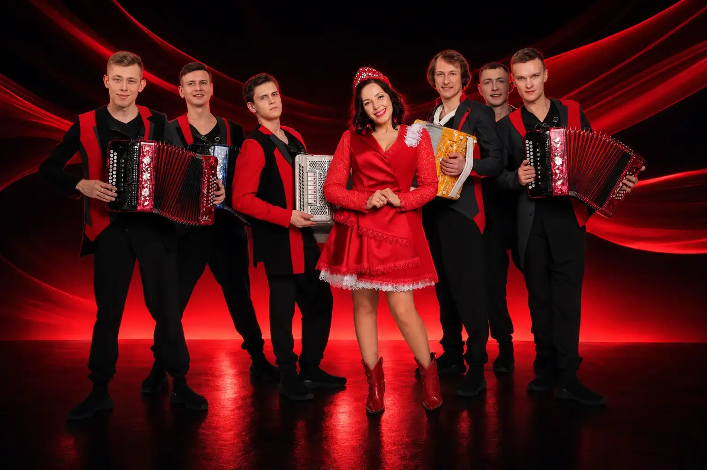
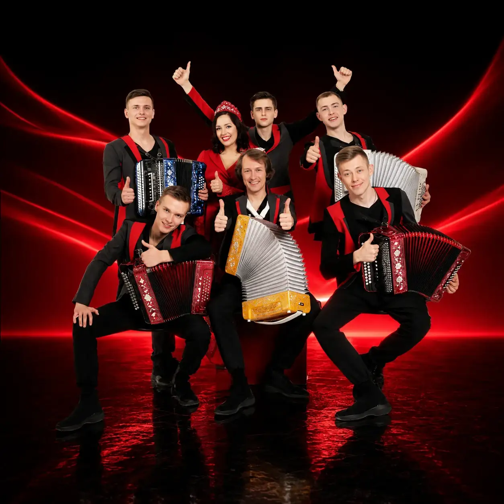
Народная музыка в современном звучании
Концертный проект Павла УхановаГармоньDRIVE — вокально-инструментальный концертный проект, построенный на живом звуке, сценической энергии и уважении к традиции.
Семь артистов — гармонь, вокал и танец — превращают народную музыку в современное шоу.
Для зрителей, которым важны сильная подача, узнаваемая мелодия и настоящий контакт со сценой.
О ПРОЕКТЕ / ГАРМОНЬDRIVE
«ГармоньDRIVE» — вокально-инструментальный коллектив гармонистов-виртуозов. Народная музыка, авторские произведения, популярная классика и современная аранжировка соединяются в цельную концертную программу.
Вокал, разные разновидности русской гармони и сценическое движение создают единый ансамбль. Каждый участник сохраняет собственную исполнительскую манеру.
Программа включает народные наигрыши регионов России, оригинальные сочинения, песни советской эстрады и переложения известных зарубежных мелодий.
НАША КОМАНДА
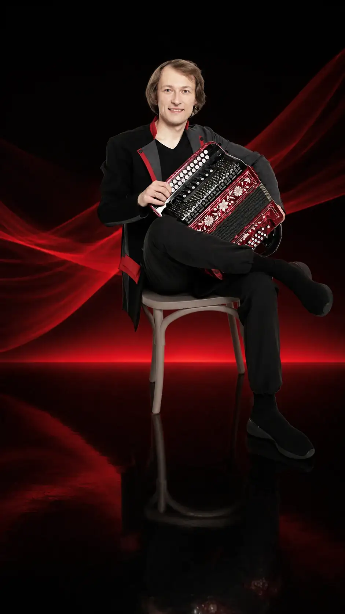
Руководитель · гармонист
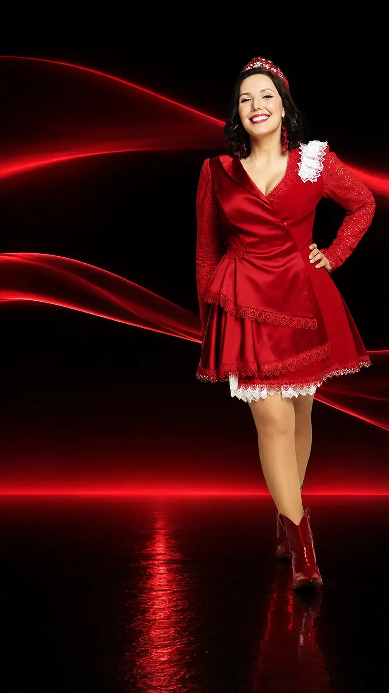
Вокал · солистка
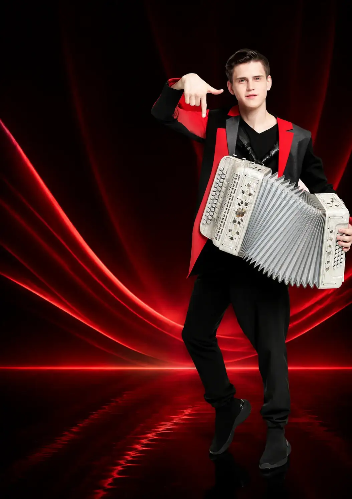
Гармонист
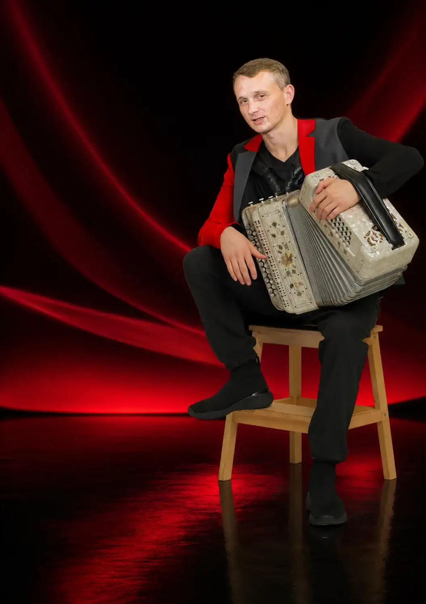
Гармонист
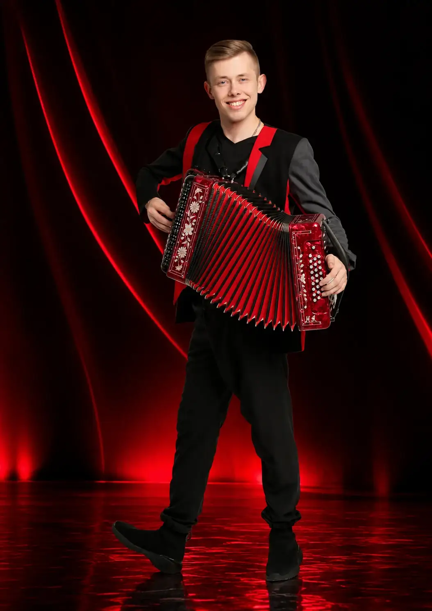
Гармонист
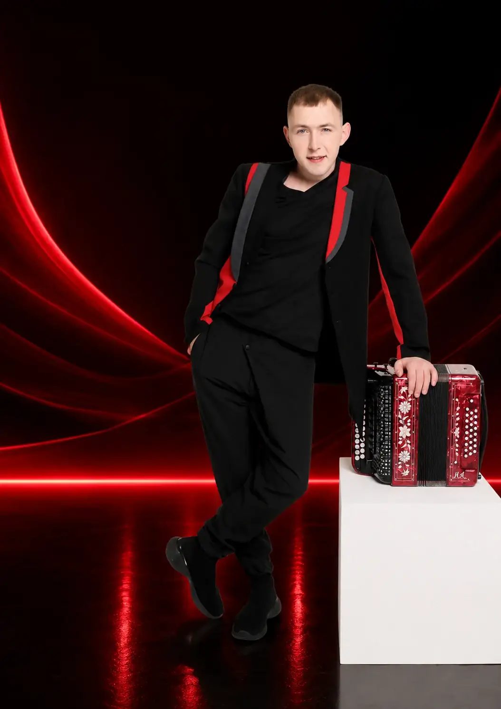
Гармонист
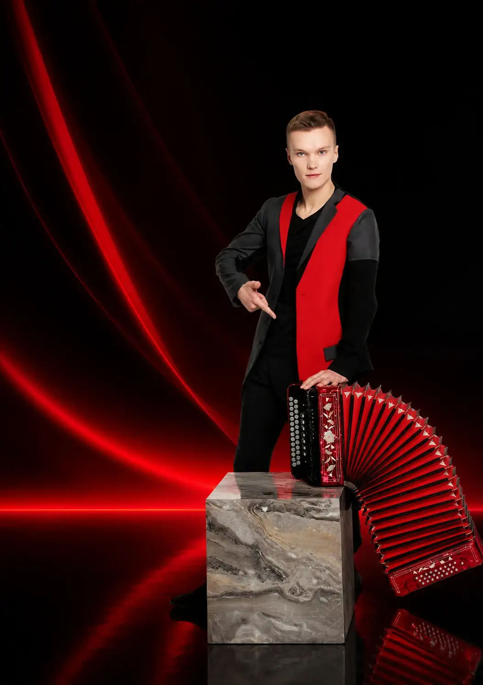
Гармонист
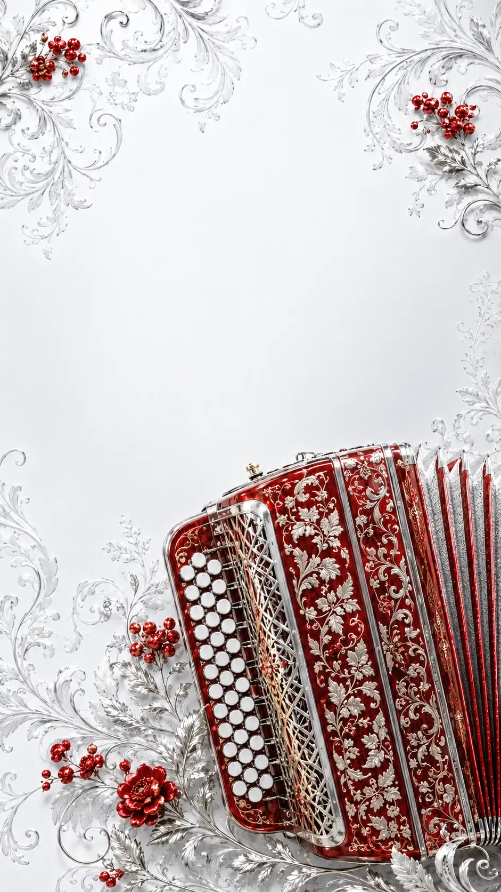
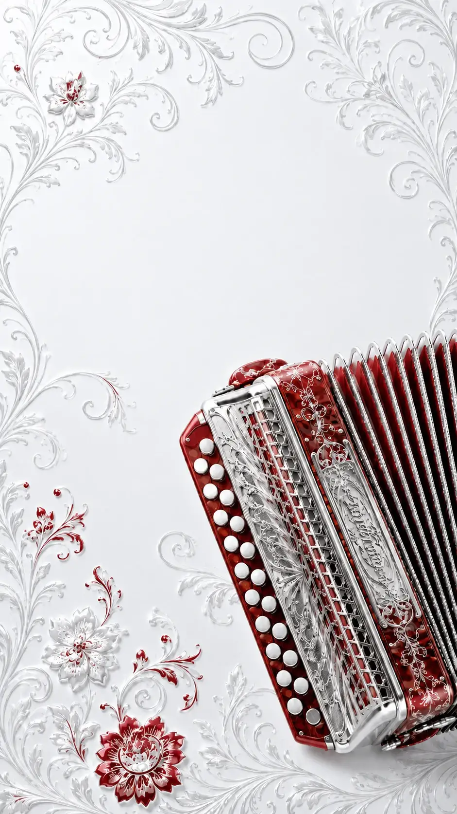
АЛЬБОМ
МЕДИА
НОВОСТИ / ЖИЗНЬ ПРОЕКТА
Концертные программы, фестивальные выступления и большая сцена ГармоньDRIVE.
Смотреть афишу ↘Каналы, записи, выступления и видеоматериалы проекта.
Открыть ГармоньDRIVETube ↗Афиши и подтверждённая информация о выступлениях собраны в отдельном блоке.
Открыть афишу ↘ГармоньDRIVE / УСЛУГИ
ГармоньDRIVE / УСЛУГИ
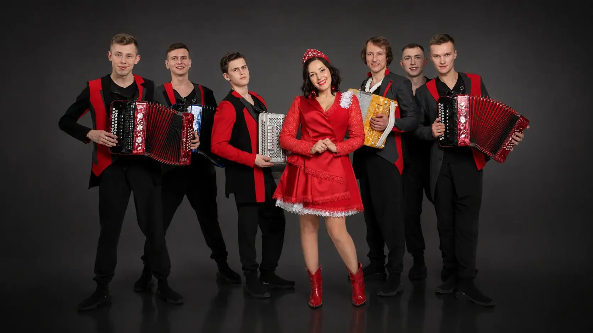
ГармоньDRIVE / УСЛУГИ
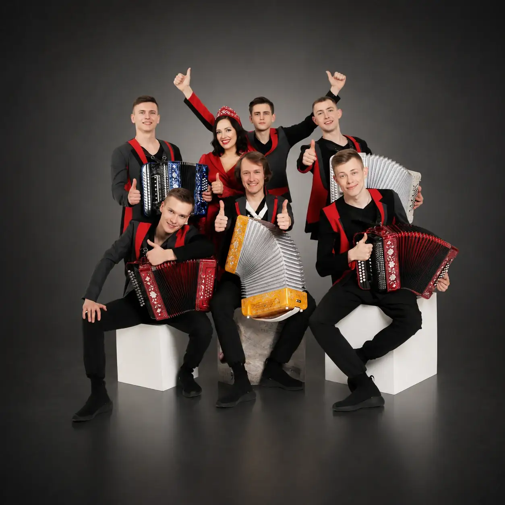
ГармоньDRIVE / УСЛУГИ
СЛУШАТЬ
КОНЦЕРТЫ · СОТРУДНИЧЕСТВО · МЕДИА